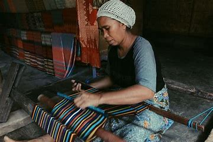

Wisata Desa Adat Sade Lombok Tengah

Wisata Desa Sade Lombok Tengah merupakan salah satu dusun yang ada di Desa Rambitan, Pujut, Kabupaten Lombok Tengah.
Dusun ini terkenal sebagai dusun yang sangat mempertahankan adat suku Sasak.
Desa sade sebenarnya bukanlah desa Adat yang terbentuk baru-baru ini, namu Desa Sade sudah menjadi Desa Adat sejak 1975.
Hanya saja dunia wisata Lombok belum begitu bergeming seperti halnya Bali. Namun saat ini, wisata Lombok sudah
bisa menyaingi wisata yang ada di Bali.Dengan menampilkan karakteristik mereka masing-masing.
Penuturan sejarah mengungkapkan bahwa, masyarakat Desa Sade sudah ada sejak 6 abad yang lalu. Kala itu
masyarakat masih menganut adat kepercayaan nenek moyang mereka.
Hanya saja kepercayaan tersebut sudah hilang termakan zaman dan waktu.
Desa Sade bukalah sebuah perkampungan besar, Terletak disebelah selatan Lombok Tengah.
Desa Sade hanyalah perkampungan kecil yang memiliki nilai budaya dan tradisi yang tinggi. Hingga saat ini, Desa
Sade menjadi tujuan wisata para tourist yang datang ke Pulau Lombok.
Mereka juda sangat penasaran dengan keberadaan Desa Sade. Masyarakat Desa Sade sangat mempertahankan keberadaan
Tradisi dan Budaya mereka yang sangat kental tersebut.
Inilah yang menjadi nilai plus Desa Sade hingga menjadi salah satu destinasi para wisatawan.
Tampilan khas sasak Lombok, serta selalu menampilakan atraksi budaya yang memiliki nilai dan menjadi ikon khas Suku Sasak Lombok.
Karena keunikan wilayah ini dan karena keunikan penghuninya yaitu suku Sasak, Desa Sade ini
ditetapkan sebagai Desa Wisata oleh Dinas Pariwisata Pulau Lombok.
Desa Ini sering disebut sebagai cerminan asli suku Sasak Lombok. meski Desa ini terletak di pinggir
jalan raya yang mulus, tetapi penduduknya tetap kuat berpegang teguh untuk menjaga keaslian desa dan adat asli Suku Sasak.
Karena penduduk Desa ini yang sangat menjaga keutuhan budaya dan adat yang diwariskan oleh leluhur mereka sejak sekitar 600 tahun
yang lalu, seperti bentuk bangunan, adat istiadat, tarian, permainan musik, gaya berpakain, dan lain sebagainya.
Maka sangat layak jika Desa ini dijadikan sebagai objek wisata Budaya di Pulau Lombok. Apabila anda berlibur ke Desa
wisata Lombok ini, maka anda akan menemukan beberapa keunikan budaya yang masih melekat di kalangan penduduknya.
• Penduduk dan Kearifan Lokal
Wisata Desa Sade Lombok Tengah memiliki luas kurang lebih 5,5 Hektar, memiliki bangunan rumah penduduk yang masih tradisional sejumlah 150
bangunan dan disetiap rumah terdiri dari satu kepala keluarga, jumlah penduduk yang menghuni Desa ini berjumlah sekitar 700 orang.
Semua penduduknya masih merupakan satu keturunan, dikarenakan masyarakat Desa ini masih melakukan perkawinan antar saudara.
Pernikahan seperti itu bagi mereka adalah pernikahan yang mudah dan cukup murah dari pada jika menikah
dengan perempuan dari desa lain karena harus mengeluarkan beberapa ekor kerbau.
• Bangunan
Setiap bangunan yang ada di Desa ini seperti masjid, rumah, lumbung padi bahkan tempat pertemuan umum mempunyai karateristik yang khas arsitektur
Suku Sasak, dengan dinding yang menggunakan pagar anyaman bambu dan tiang yang dibuat dari kayu, dengan atap yang dibuat dari alang-alang kering.
Lantainya dibuat tanah liat yang diberi campuran sedikit sekam padi. Salah satu keunikan bangunan rumah ini adalah cara merawatnya, dalam
waktu seminggu sekali atau waktu-waktu tertentu lantai rumah dibersihkan dengan cara menggosokkan kotoran kerbau yang dicampur
sedikit air pada lantai rumah, setelah kering, lantai disapu dan digosok dengan batu.
Kotoran kerbau ini bermanfaat untuk membersihkan lantai rumah dari debu dan agar lantai terasa lebih halus dan menjadi lebih kuat.
Penduduk Desa ini mempercayai bahwa penggunaan kotoran sapi ini juga bisa mengusir serangga
serta mencegah serangan magic yang ditujukan kepada anggota keluarga.
• Atraksi dan Budaya Lombok
Wisata Desa Sade Lombok Tengah ini anda bisa menyaksikan atraksi budaya seperti permainan alat musik tradisional gendang Beleq, Tari Cupak Gerantang, dan Tari Presean.
• Pakaian Adat
Anda akan menemukan sebagian besar penduduk Desa ini yang setiap harinya menggunakan pakaian adat Suku Sasak. Meskipun tidak semua penduduk, tetapi anda akan tetap merasakan suasana zaman dulu di Desa Sade wisata Lombok ini.
• Peralatan Keseharian
Hal unik lainnya adalah penggunaan peralatan sehari – hari seperti alat pemintal kapas, alat tenun, alat
pertanian, dan alat-alat keseharian lainnya yang digunakan penduduk Desa ini masih sangat tradisional
dan masih jauh dari kata modern.
Lombok juga identik dengan desa adat Suku Sasak dan kerajinan tradisional kain tenun ikat.
Terkait kain tenun, ada 2 jenis: tenun ikat dimana yang mengerjakan biasanya
kaum laki-laki dan tenun songket di mana yang mengerjakan biasanya kaum wanita.
Wanita belum boleh menikah jika belum bisa menenun kain.Anda bisa "belajar" menenun
dari mereka, juga berfoto dengan mengenakan baju adat.